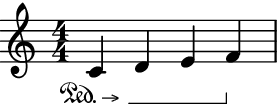

piano_pedal¶
- auxjad.piano_pedal(argument: Union[abjad.score.Component, abjad.select.Selection], *, half_pedal: bool = False, until_the_end: bool = False, omit_raise_pedal_glyph: bool = False, selector: abjad.expression.Expression = abjad.select().leaves(), start_piano_pedal: Optional[abjad.indicators.StartPianoPedal.StartPianoPedal] = None, stop_piano_pedal: Optional[abjad.indicators.StopPianoPedal.StopPianoPedal] = None, tag: Optional[abjad.tag.Tag] = None) → None[source]¶
Attaches piano pedal indicators. This function extends the capabilities of Abjad’s built-in
abjad.piano_pedal().- Basic usage:
Basic usage is identical to Abjad’s built-ind
abjad.piano_pedal():>>> staff = abjad.Staff(r"c'4 d'4 e'4 f'4") >>> abjad.piano_pedal(staff[:]) >>> abjad.show(staff)
Note
Auxjad automatically replaces Abjad’s built-in
abjad.piano_pedal()with this function. Therefore it can be used either asabjad.piano_pedal()orabjad.piano_pedal(), as shown below:>>> staff1 = abjad.Staff(r"c'4 d'4 e'4 f'4") >>> staff2 = abjad.Staff(r"c'4 d'4 e'4 f'4") >>> abjad.piano_pedal(staff1[:]) >>> auxjad.piano_pedal(staff2[:]) >>> selections = [staff1[:], staff2[:]] >>> auxjad.get.selections_are_identical(selections) True
until_the_end:Call the function with
until_the_endset toTrueto add an arrow to the initial pedal glyph:>>> staff = abjad.Staff(r"c'4 d'4 e'4 f'4") >>> abjad.piano_pedal(staff[:], ... until_the_end=True, ... ) >>> abjad.show(staff)
omit_raise_pedal_glyph:Call the function with
omit_raise_pedal_glyphset toTrueto remove the raise pedal glyph:>>> staff = abjad.Staff(r"c'4 d'4 e'4 f'4") >>> abjad.piano_pedal(staff[:], ... omit_raise_pedal_glyph=True, ... ) >>> abjad.show(staff)
Combined with
until_the_end=True:>>> staff = abjad.Staff(r"c'4 d'4 e'4 f'4") >>> abjad.piano_pedal(staff[:], ... until_the_end=True, ... omit_raise_pedal_glyph=True, ... ) >>> abjad.show(staff)
half_pedal:Call the function with
half_pedalset toTrueto use the half pedalling glyph:>>> staff = abjad.Staff(r"c'4 d'4 e'4 f'4") >>> abjad.piano_pedal(staff[:], ... half_pedal=True, ... ) >>> abjad.show(staff)
Combined with
until_the_end=True:>>> staff = abjad.Staff(r"c'4 d'4 e'4 f'4") >>> abjad.piano_pedal(staff[:], ... half_pedal=True, ... until_the_end=True, ... ) >>> abjad.show(staff)
- Pedal style:
The style of the sustain pedal can be tweaked using
abjad.setting()as shown below:>>> staff = abjad.Staff(r"c'4 d'4 e'4 f'4") >>> abjad.piano_pedal(staff[:]) >>> abjad.setting(staff).pedal_sustain_style = "#'mixed" >>> abjad.show(staff)
This tweak also works with
until_the_end=Trueif desired:>>> staff = abjad.Staff(r"c'4 d'4 e'4 f'4") >>> abjad.piano_pedal(staff[:], ... until_the_end=True, ... ) >>> abjad.setting(staff).pedal_sustain_style = "#'mixed" >>> abjad.show(staff)
